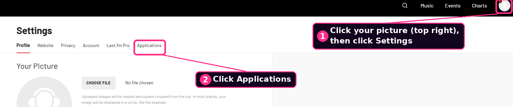
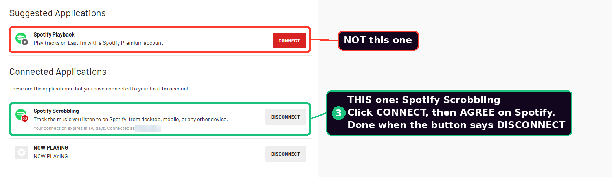
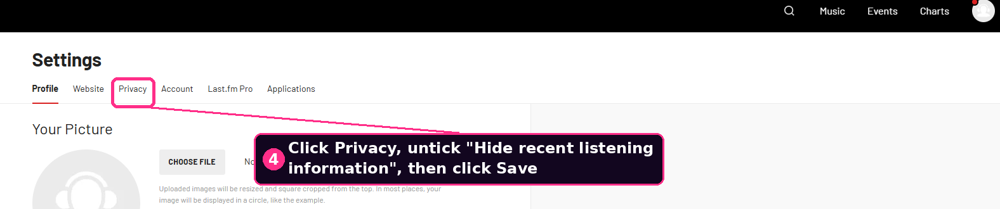
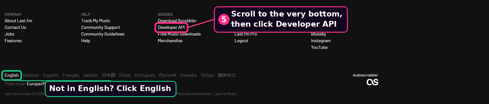
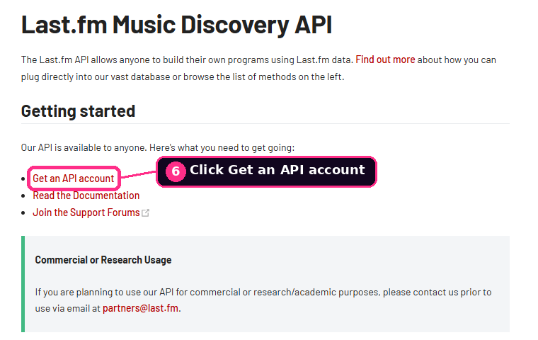
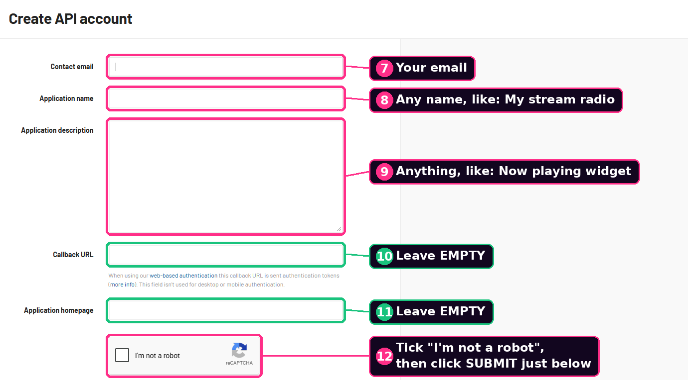
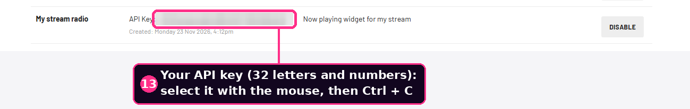
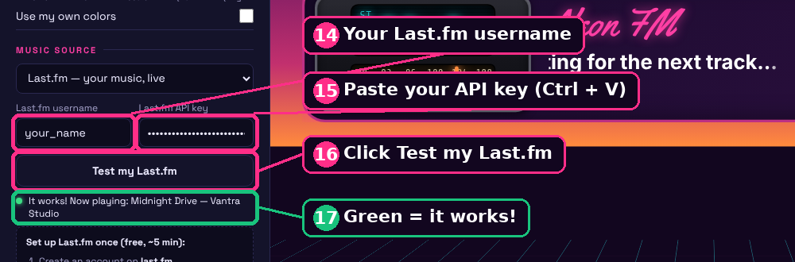
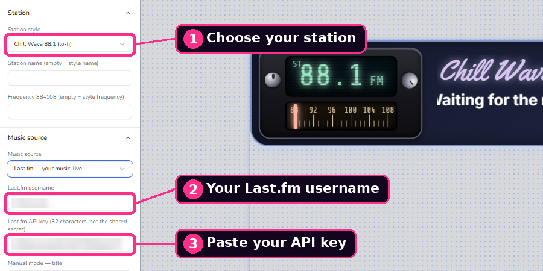

Never installed a widget before? This guide is for you. About 10 minutes, no code. Your music becomes a neon FM station on your stream.
BEGINNER FRIENDLY · ~10 MINPrefer a video? Open HOW-TO-USE.mp4 in the same folder.
| Station | Style | Frequency |
|---|---|---|
| Neon FM | Synthwave (default) | 103.5 |
| SUNSET FM | Open-world crime: sunset sky, palm trees, bold logo | 96.9 |
| Thunder Rock | Rock | 98.7 |
| Block Party | Hip-hop | 105.9 |
| Chill Wave | Lo-fi | 88.1 |
The radio shows the song marked "Scrobbling now" on your Last.fm profile, checked every few seconds. On every new song, the needle sweeps the dial with a short radio static, then the new title appears. Long titles scroll. The name, the frequency and the colours can be changed.
On Etsy, go to You › Purchases and download the ZIP. Right-click it › Extract all. Keep every file in the same folder, don't rename anything.
Documents. The OBS links point to these files: if you move the folder, copy the links again.The radio finds your music through Last.fm. It's free and you do it only once (about 10 minutes). Follow the pictures: the pink frames show where to click, the green frames are the right choice.
Open last.fm/join, fill in the form and confirm the email Last.fm sends you. Already have an account? Just log in.
Click your picture at the top right, then Settings. Then click the Applications tab.
Shortcut: open last.fm/settings/applications

There are two Spotify lines. Use Spotify Scrobbling (green), not Spotify Playback (red). Click CONNECT, a Spotify window opens: click Agree. When it's done, the button says DISCONNECT: that means it's connected. Don't click it!

Still in Settings, click the Privacy tab. Find "Hide recent listening information": the box must be empty (not ticked). Click Save changes.
Shortcut: last.fm/settings/privacy

Play a song on Spotify. Open your Last.fm profile (click your picture). At the top of Recent Tracks, your song shows with "Scrobbling now". Yes? Perfect, go to F.
Nothing? Wait 1 minute and refresh the page. In Spotify, check Private session is OFF.
Scroll to the very bottom of any Last.fm page. In the GOODIES column, click Developer API.

Don't worry about the word "API": it's just a free key that lets the radio read your music.
Shortcut: open last.fm/api/account/create

Type your email, any name (like My stream radio) and any description. Leave the two other boxes EMPTY. Tick I'm not a robot, then click Submit (just below).

You now see your API key: 32 letters and numbers. Select it with the mouse and press Ctrl + C (Mac: Cmd + C). If you also see a "Shared secret", don't use it.
Lost it? All your keys are here: last.fm/api/accounts. Keep it private: don't show it on stream.

Open index.html (the configurator). Type your Last.fm username (the name in your profile, not your email), paste your API key (Ctrl + V), play a song, then click Test my Last.fm. Green = it works! A red message tells you exactly what to fix (see "Something doesn't work?" at the bottom).

index.html. It opens in your browser: this is the configurator, with a live preview.preview-standalone.html: nothing to set up.
Each button copies a whole file for you: just paste it. You can also open the files with Notepad.
| What you can change (configurator or StreamElements settings) |
|---|
| Station: SUNSET FM, Neon FM, Thunder Rock, Block Party, Chill Wave · your own name and frequency |
| Your own colours: name, LCD, needle, equalizer (low and high) |
| When nothing plays: a message, the last song played, or hide the radio |
| Radio static sound on/off and volume · scrolling speed for long titles |
| How often it checks Last.fm (8 seconds by default) |
| No Last.fm? Manual text: type the title and artist yourself |
Check the spelling of your Last.fm username (the one in your profile address, not your email).
Copy the "API key" again (32 characters), not the "Shared secret".
Last.fm › Settings › Privacy: untick "Hide recent listening information".
Start a song and check your Last.fm profile shows "Scrobbling now". On Spotify, turn off the private session.
That's normal: 5 to 10 seconds. You can check Last.fm more often (minimum 4 seconds).
You probably moved the folder. Open index.html again from the new place and copy a new link.
Send us a message on Etsy with a screenshot: we reply within 24 hours.
Thank you for choosing VANTRA STUDIO.